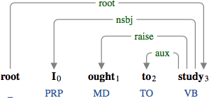
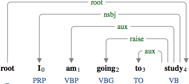
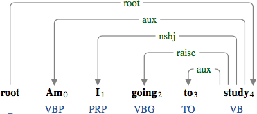
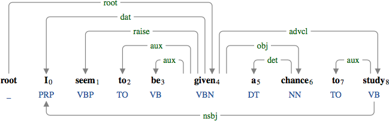
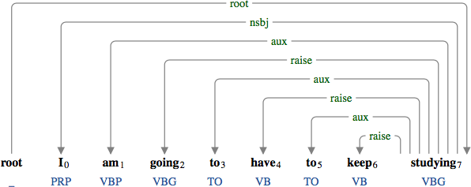

A raising predicate (raise) is a raising-to-subject verb whose syntactic argument is the semantic argument of the matrix verb.

The modal "ought" is raised and modifies the matrix verb "study".

The verb "going" is raised and modifies the matrix verb "study".

The verb "going" is raised and modifies the matrix verb "study" in an interrogative form.

The verb "seem" is raised and modifies the matrix verb "given".

The verbs "going" and "have" are raised and modify the matrix verb "studying".